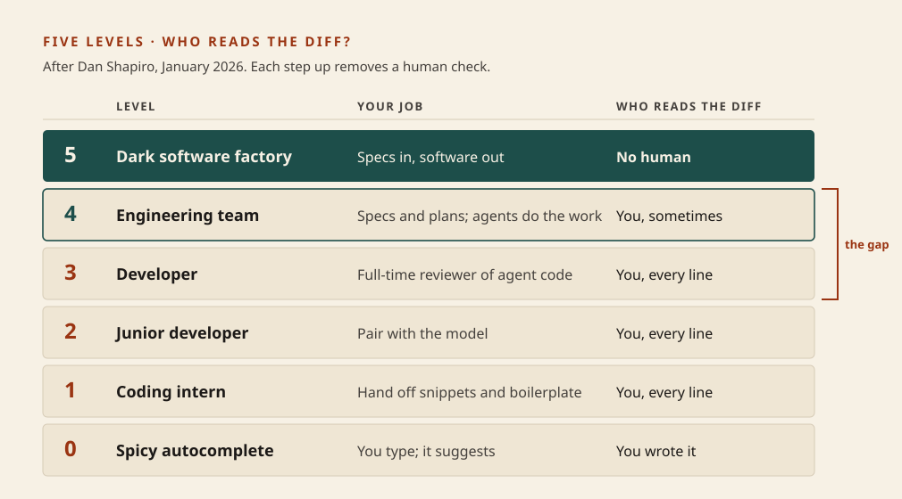
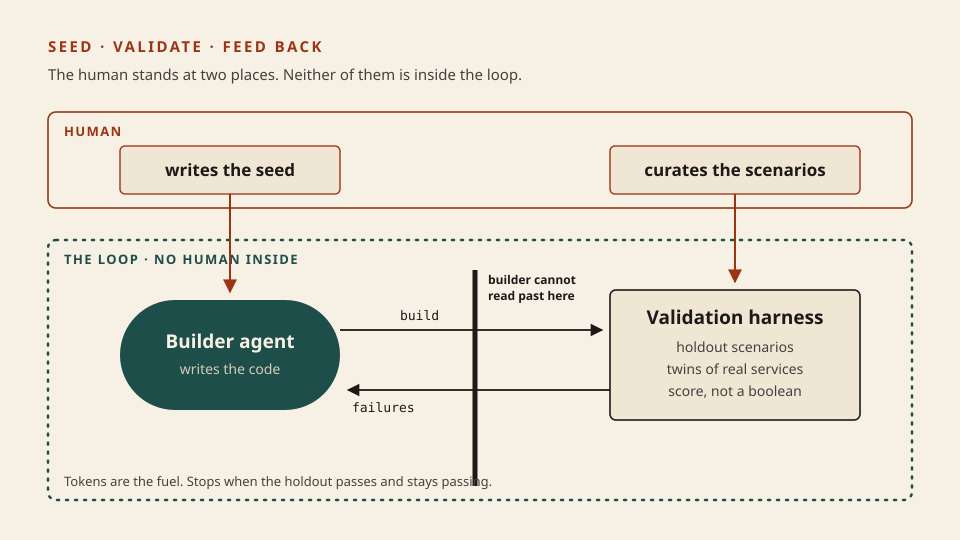

Software factory
The lights go out last
“Software factory” is the 2026 name for a team where agents write the code and nobody reads it. The phrase is easy to say and easy to fake. One question separates the real ones from the reckless ones, and it is the only thing to learn tonight: when the human stopped reading the diff, what started doing that job?
What this is. The definition, the ladder that leads to it, and a test you can apply to any team, including yours. StrongDM, who put the term on the map: “non-interactive development where specs + scenarios drive agents that write code, run harnesses, and converge without human review.” StrongDM · Software Factory
What this is not. How to build the validation (0023), how to make a repo agents can work in (0024), or the ramp for one developer and for a team (0025). Not a product you buy either. Vendors now sell things under this name; the pattern came first and needs none of them. Not the 2000s “software factories” of code generators and product lines, which shares only the word.
- 1 · SeedA spec. The human writes it.
- 2 · ValidateA check the builder cannot game.
- 3 · Feed backFailures return. Loop until it holds.
StrongDM’s own summary: “Seed → Validation harness → Feedback loop. Tokens are the fuel.” Principles

Dan Shapiro’s ladder, modelled on the levels of driving automation. Read the right-hand column. The climb is a human check being removed, one rung at a time.
Where the name came from
In January 2026 Dan Shapiro published five levels of AI-assisted coding, from “spicy autocomplete” to the “dark factory”, named after factories that run with the lights off because robots do not need to see. He puts most developers around level 2 and calls level 5 “a black box that turns specs into software,” run by teams of fewer than five. The Five Levels · Simon Willison’s notes
A week later StrongDM’s three-person AI team described working that way since July 2025, under two rules: “Code must not be written by humans” and “Code must not be reviewed by humans.” Willison on StrongDM
You already own every part. The loop is 0012, where the maker is not the checker. The check is 0014 and 0019. The wall around it is 0020. A factory is those three running with no one watching.
- Seed “Every piece of software needs an initial seed”: a spec, a PRD, a screenshot, an existing codebase. The human’s work moved here, to the front.
- Validate End to end, “as close to the real environment as possible.” StrongDM keeps its scenarios outside the codebase, like a holdout set, so the builder cannot see what it will be graded on.
- Feed back Output is sampled and fed back in, so the system can “self-correct and compound correctness.” It stops when the holdout scenarios pass “and stay passing.”

Architecture first. The human did not leave. They moved from the middle of the loop to its two ends.
The question that sorts the real from the fake
Removing review is the easy half. Anyone can stop reading diffs. Simon Willison, who visited the StrongDM team, names the hard half: “how can you prove that software you are producing works if both the implementation and the tests are being written for you by coding agents?” Agent-written tests only help “if they don’t cheat and assert true.” Willison
Anthropic found the same thing from the other side: asked to grade their own work, agents respond by “confidently praising the work — even when, to a human observer, the quality is obviously mediocre.” Harness design for long-running apps
So the test for any rung is one sentence: name the thing that replaced your eyes, and say why the builder cannot fool it. If you cannot, the lights are off and nothing is watching.
One feature, two rungs · prorate refunds on annual plans
# Same billing assistant as 0014–0020: HTTP + DB + Stripe.
LEVEL 3 · you read the diff
you prompt: "add proration to the refund policy"
agent edits policy.ts and refunds.test.ts, opens a PR
you read 240 lines, ask for two changes # your eyes are the check
you merge
LEVEL 5 · factory
SEED you specs/refund-proration.md # intent + acceptance criteria
VALIDATE you scenarios/annual-midyear.md # kept where the builder cannot read
twin a fake Stripe: refunds.create returns re_ ids, records amounts
LOOP agent builds
check runs every scenario against the twin 6 of 9
agent receives the three failures, rebuilds 8 of 9
agent again 9 of 9, and stays 9
SHIP nobody opened policy.ts
you read: the scenario board, one trace (0018), the twin's refund ledger
FAKE LEVEL 5
agent writes policy.ts AND refunds.test.ts, tests green, auto-merge
check none that the builder did not write itself
What this shows. At level 5 you still did real work: one spec and one scenario, both before any code existed. What you gave up was line-by-line review, and you could only give it up because the scenario file and the Stripe twin now do the looking. Notice what you read at the end: the refund ledger, the outcome in the world, which is 0014 again. The third block looks like level 5 from the outside and has no check at all.
Skill: name what replaced the eyes
Six teams. For each, decide what stands between the agent and production. Answer before you look for the reason.
Who is watching?
Three field reports, and the bill
StrongDM
Three people, from July 2025. Security software. Scenarios as a holdout, a “Digital Twin Universe” of cloned services. Their own yardstick: about $1,000 of tokens per engineer per day. source
OpenAI
Three engineers growing to seven, five months, about a million lines and 1,500 pull requests, zero typed by hand. “Humans steer. Agents execute.” A new repository, started empty. source
Anthropic
Sixteen agents, about 2,000 sessions, just under $20,000, a 100,000-line C compiler. The lesson its author drew: “it’s important that the task verifier is nearly perfect.” source
Each report is written by the team that did the work, about a project started from nothing. Read them as evidence that it can be done, and then read the costs they and others state:
- Money. Willison on the $1,000 a day: if these patterns add $20,000 a month per engineer, “they’re far less interesting to me.” He hopes for a version at far lower spend. That version is what 0025 is about.
- Transfer. OpenAI: the behaviour “depends heavily on the specific structure and tooling of this repository and should not be assumed to generalize without similar investment.” All three were new codebases.
- False green. The compiler’s author: “it is easy to see tests pass and assume the job is done, when this is rarely the case,” and deploying software nobody has personally verified “is a real concern.”
- Accountability. A Stanford Law commentary on StrongDM: when agents write and agents test, “nobody knows who is liable,” and contracts still assume a human reviewed the code. Built by Agents, Tested by Agents, Trusted by Whom?
What to do with this on Monday
Solo developer
Find your rung honestly. Then pick one kind of change you review today and ask what check would let you stop. Build that check before you stop reading.
Team lead
When someone says “we should be a software factory,” ask the lesson’s question in the design review. Level 5 is not the goal for every codebase. Level 4 with strong checks beats level 5 with none.
Next
0023: build the check. Scenarios the builder cannot see, a twin of one outside service, and a score instead of a green tick.
Parked for the next three lessons: holdout scenarios and twins (0023); the repository as the system of record, a short AGENTS.md as a map, and rules promoted into linters (0024); the ramp, the budget and where to keep a human (0025). StrongDM’s named techniques (Attractor, gene transfusion, semports, pyramid summaries) are parked until one of them is the next thing you need.
Check
Primary source. How StrongDM’s AI team build serious software without even looking at the code, by Simon Willison. Fifteen minutes. It is the best single piece because he saw the system, quotes the team’s own words, and then says what worries him. Second, for the engineering detail: Harness engineering, by Ryan Lopopolo at OpenAI.
Card: software factory. Loop: loop engineering. Check: eval suites. Wall: agent security. In code: lesson 0021.